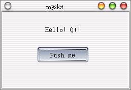
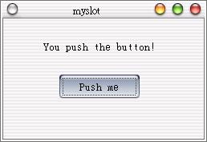

| 多
數的設計需求下，我們會設計當事件發生時，呼叫我們所定義的函式來進行某些處理，而不是使用Qt所預設的Slot，接下來我們說明如何自訂Slot，並學
習如何組織Qt程式的檔案架構，我們要編輯的檔案將有三個：showpush.h、showpush.cpp、main.cpp。 首先我們編輯標頭檔showpush.h，在當中寫入類別定義：
#ifndef LCDRANGE_H 接下來編輯showpush.cpp實作ShowPush類別的內容：
#include "showpush.h" 再來就是編輯主程式main.cpp：
#include <qapplication.h> 這個程式的作用是顯示一個按鈕與文字，當按下按鈕時，文字會出現不同的內容，以下我們解釋showpush.h式的內容。 只有在LCDRANGE_H名稱沒被定義過（#ifndef）的情況下，才會編譯以下的定義內容。這是個類別定義的技巧，可以避免類別定義的重覆，如果類別定義重覆，該段定義將不會被編譯： #ifndef LCDRANGE_H
#define LCDRANGE_H 除了使用QPushButton之外，我們還要使用QLabel來顯示文字，在這邊我們include這兩個類別的定義檔： #include <qlabel.h>
#include <qpushbutton.h> 這個巨集必須出現在包括Signal與（或）Slot的類別之中，提供物件間溝通的Signals與Slots機制，更詳細的資訊可以查詢Qt使用手冊中有關於 Meta Object System的說明： Q_OBJECT
定義Slot函式setlabelText()，當指定連結的Signal發生時會呼叫此函式： public slots:
void setlabelText(); 接下來解釋showpush.cpp的內容，主要在實作每個函式，首先將我們之前定義的類別標頭檔include進來： #include "showpush.h"
宣告QLabel物件label並設定其顯示文字為"Hello! Qt!"，然後設定文字的顯示方式為置中： label = new QLabel("Hello! Qt!", this, "label");
label->setAlignment(AlignCenter); 將QPushButton物件btn的Signal - clicked()連接至我們所定義的Slot - setlabelText()： connect(btn, SIGNAL(clicked()), SLOT(setlabelText()));
設定焦點在QPushButton物件btn上： setFocusProxy(btn);
當QPushButton發出Signal - clicked()時，會呼叫這個函式，每次呼叫後 i 會加 1 ，然後看看是不是為2的倍數，如果是就顯示"You push the button!"，如果不是就顯示"Hello! Qt!"，所以當您按下按鈕時，文字顯示會不斷變化： void ShowPush::setlabelText() {
i = (i+1) % 2; if(i) label->setText("You push the button!"); else label->setText("Hello! Qt!"); } 主程式main.cpp的內容您應該都會了，以下為執行結果的兩個畫面：   |
|